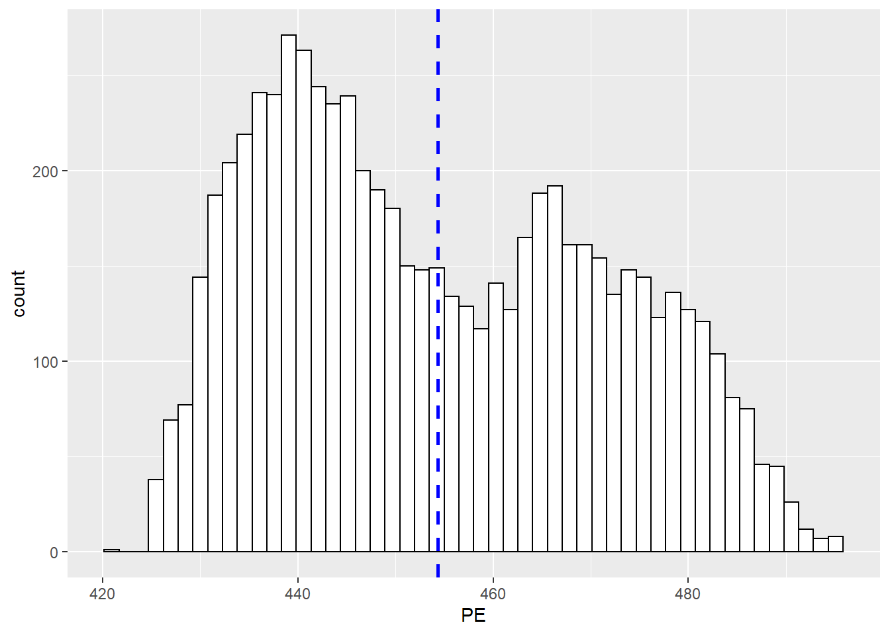
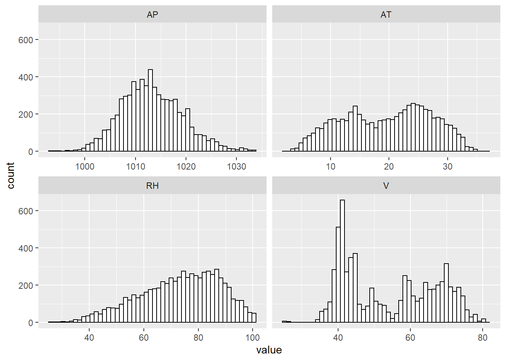
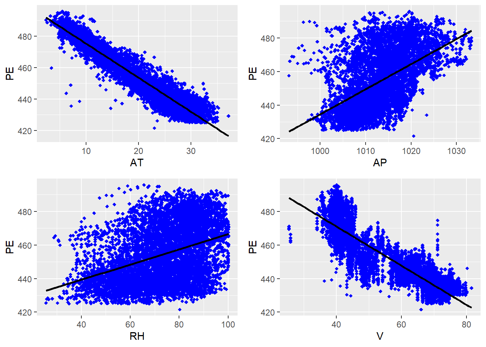
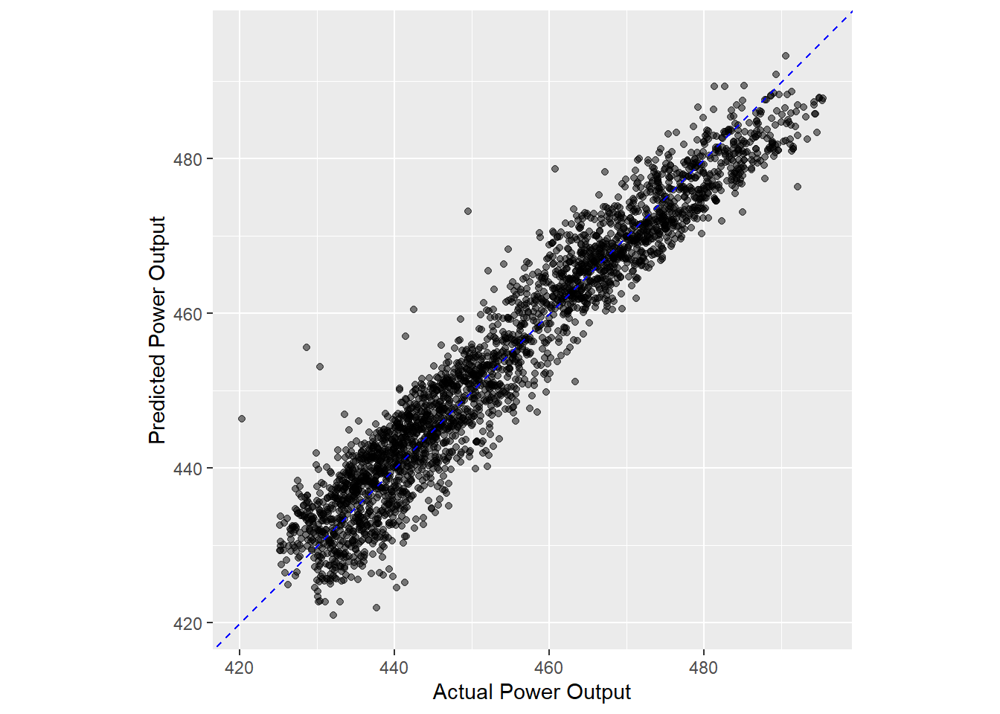

Last updated: 2022-11-16
Checks: 7 0
Knit directory: Misean/
This reproducible R Markdown analysis was created with workflowr (version 1.7.0). The Checks tab describes the reproducibility checks that were applied when the results were created. The Past versions tab lists the development history.
Great! Since the R Markdown file has been committed to the Git repository, you know the exact version of the code that produced these results.
Great job! The global environment was empty. Objects defined in the global environment can affect the analysis in your R Markdown file in unknown ways. For reproduciblity it’s best to always run the code in an empty environment.
The command set.seed(20221115) was run prior to running
the code in the R Markdown file. Setting a seed ensures that any results
that rely on randomness, e.g. subsampling or permutations, are
reproducible.
Great job! Recording the operating system, R version, and package versions is critical for reproducibility.
Nice! There were no cached chunks for this analysis, so you can be confident that you successfully produced the results during this run.
Great job! Using relative paths to the files within your workflowr project makes it easier to run your code on other machines.
Great! You are using Git for version control. Tracking code development and connecting the code version to the results is critical for reproducibility.
The results in this page were generated with repository version 4fd7495. See the Past versions tab to see a history of the changes made to the R Markdown and HTML files.
Note that you need to be careful to ensure that all relevant files for
the analysis have been committed to Git prior to generating the results
(you can use wflow_publish or
wflow_git_commit). workflowr only checks the R Markdown
file, but you know if there are other scripts or data files that it
depends on. Below is the status of the Git repository when the results
were generated:
Ignored files:
Ignored: .Rhistory
Ignored: .Rproj.user/
Untracked files:
Untracked: analysis/images/check-code.png
Untracked: analysis/images/communicating.png
Untracked: analysis/images/corporate-finance-inst.png
Untracked: analysis/images/create-account.png
Untracked: analysis/images/lightning.png
Untracked: analysis/images/meetings.png
Untracked: analysis/images/schedule-meeting.png
Untracked: analysis/images/setting-up.png
Untracked: analysis/images/sign-in.jpg
Untracked: analysis/images/zoom-on-mobile.webp
Untracked: analysis/images/zoom.png
Untracked: data/employee_data.rds
Untracked: data/home_sales.rds
Untracked: data/leads_df.rds
Untracked: data/loan_df.rds
Untracked: data/power_df.csv
Untracked: data/telecom_df.rds
Untracked: data/trip.csv
Untracked: donation-tracking-excel-templates (2).zip
Untracked: donation-tracking-excel-templates/
Untracked: kickstarter.zip
Untracked: kickstarter/
Unstaged changes:
Modified: README.md
Modified: analysis/_site.yml
Note that any generated files, e.g. HTML, png, CSS, etc., are not included in this status report because it is ok for generated content to have uncommitted changes.
These are the previous versions of the repository in which changes were
made to the R Markdown (analysis/Correlation.Rmd) and HTML
(docs/Correlation.html) files. If you’ve configured a
remote Git repository (see ?wflow_git_remote), click on the
hyperlinks in the table below to view the files as they were in that
past version.
| File | Version | Author | Date | Message |
|---|---|---|---|---|
| html | 4fd7495 | JJCoen | 2022-11-16 | Build site. |
| Rmd | 3ec87e6 | JJCoen | 2022-11-16 | add Data Analysis and Training |
We are trying to predict power output given a set of readings from various sensors in a gas-fired power generation plant. Power generation is a complex process, and understanding and predicting power output is an important element in managing a plant and its connection to the power grid.
A combined cycle power plant (CCPP) is composed of gas turbines (GT), steam turbines (ST) and heat recovery steam generators. In a CCPP, the electricity is generated by gas and steam turbines, which are combined in one cycle, and is transferred from one turbine to another. While the Vacuum is colected from and has effect on the Steam Turbine, he other three of the ambient variables effect the GT performance.
The data-set contains 9568 data points collected from a Combined Cycle Power Plant over 6 years (2006-2011), when the power plant was set to work with full load. Features consist of hourly average ambient variables Temperature (T), Ambient Pressure (AP), Relative Humidity (RH) and Exhaust Vacuum (V) to predict the net hourly electrical energy output (EP) of the plant.
- Temperature (T) in the range 1.81°C and 37.11°C,
- Ambient Pressure (AP) in the range 992.89-1033.30 milibar,
- Relative Humidity (RH) in the range 25.56% to 100.16%
- Exhaust Vacuum (V) in the range 25.36-81.56 cm Hg
- Net hourly electrical energy output (EP) 420.26-495.76 MW
The averages are taken from various sensors located around the plant
that record the ambient variables every second. The variables are given
without normalization.
Source: UCI Machine Learning Repository Combined Cycle Power Plant Data Set
if (!file.exists("./data/power_df.csv")) {
power_df <- read_excel("./data/Power-Plant/Folds5x2_pp.xlsx")
write_csv(power_df, file = "./data/power_df.csv")
setDT(power_df)
} else {
power_df <- fread("./data/power_df.csv")
}
str(power_df)Classes 'data.table' and 'data.frame': 9568 obs. of 5 variables:
$ AT: num 14.96 25.18 5.11 20.86 10.82 ...
$ V : num 41.8 63 39.4 57.3 37.5 ...
$ AP: num 1024 1020 1012 1010 1009 ...
$ RH: num 73.2 59.1 92.1 76.6 96.6 ...
$ PE: num 463 444 489 446 474 ...
- attr(*, ".internal.selfref")=<externalptr> rsample object, power_split,
that contains the instructions for randomly splitting the
home_sales data into a training and test data-set.PE.# Create data split object
power_split <- initial_split(power_df, prop = 0.7,
strata = PE)
# Create the training data
power_training <- power_split %>%
training()
# Create the test data
power_test <- power_split %>%
testing()
# Check the number of rows
nrow(power_training)[1] 6696nrow(power_test)[1] 2872Stratifying by the outcome variable when generating training and test data-sets ensures that the outcome variable values have a similar range in both data-sets.
PE variable# Distribution of PE in training data
power_training %>%
summarize(min_power_out = min(PE),
max_power_out = max(PE),
mean_power_out = mean(PE),
sd_power_out = sd(PE)) min_power_out max_power_out mean_power_out sd_power_out
1 422 496 454 17ggplot(data=power_training, aes(x = PE )) +
geom_histogram(color="black", fill="white", bins=50) +
geom_vline(aes(xintercept=mean(PE)), color="blue", linetype="dashed", size=1)
\(\rightarrow\) Target variable is bi-modal.
Reshape power_df to long format with key value pairs
Create histograms
ggplot(gather(power_training[, -("PE")]), aes(value)) +
geom_histogram(color="black", fill="white", bins=50) +
facet_wrap(~key, scales = 'free_x')
\(\rightarrow\) right skew in RH can be reduced with Box-Cox transformation.
\(\rightarrow\) AP has a normal distribution while AT is approximately normal.
grid.arrange(g1, g2, g3, g4, ncol = 2, nrow =2)
\(\rightarrow\) despite certain points on the edges of the main clusters, there are no distinct outliers.
# install.packages("corrr")
library(corrr)
Attaching package: 'corrr'The following object is masked from 'package:skimr':
focuspower_training %>%
correlate() %>% # Create correlation data frame (cor_df)
# focus(-PE, mirror = TRUE) %>% # Focus on cor_df without 'PE'
rearrange() %>% # rearrange by correlations
shave() # Shave off the upper triangle for a clean resultCorrelation computed with
• Method: 'pearson'
• Missing treated using: 'pairwise.complete.obs'# A tibble: 5 × 6
term AT V RH AP PE
<chr> <dbl> <dbl> <dbl> <dbl> <dbl>
1 AT NA NA NA NA NA
2 V 0.843 NA NA NA NA
3 RH -0.541 -0.308 NA NA NA
4 AP -0.515 -0.421 0.100 NA NA
5 PE -0.948 -0.869 0.388 0.526 NA\(\rightarrow\) high negative correlation (-0.95) between atmospheric temp. and power outpupt.
\(\rightarrow\) high correlation (0.84) between atmospheric temp. and exhaust vacuum.
# Specify a logistic regression model
linear_model <- linear_reg() %>%
# Set the engine
set_engine('lm') %>%
# Set the mode
set_mode('regression')
# Fit to training data
lm_fit <- linear_model %>%
fit(PE ~ AT + V + AP + RH,
data = power_training)
# Print model fit object
lm_fitparsnip model object
Call:
stats::lm(formula = PE ~ AT + V + AP + RH, data = data)
Coefficients:
(Intercept) AT V AP RH
454.6908 -1.9690 -0.2363 0.0618 -0.1563 After fitting a model using the training data, the next step is to use it to make predictions on the test dataset. The test dataset acts as a new source of data for the model and will allow you to evaluate how well it performs.
Before you can evaluate model performance, you must add your predictions to the test data-set.
PE and all predictor columns
from the test data-set and the predicted home selling prices.# Predict power output
power_predictions <- predict(lm_fit,
new_data = power_test)
# View predicted power output
power_predictions %>% head()# A tibble: 6 × 1
.pred
<dbl>
1 451.
2 472.
3 442.
4 443.
5 467.
6 472.# Combine test data with predictions
power_test_results <- power_test %>%
bind_cols(power_predictions)
# View results
power_test_results %>% head() AT V AP RH PE .pred
1: 20.9 57.3 1010 76.6 446 451
2: 10.8 37.5 1009 96.6 474 472
3: 26.3 59.4 1012 58.8 444 442
4: 25.7 58.6 1013 61.8 451 443
5: 14.4 52.8 1024 63.6 460 467
6: 14.0 38.5 1015 55.3 464 472A common performance metric for regression models is the root mean
squared error, or RMSE. The RMSE estimates the average prediction error
of a model and is calculated with the rmse() function. To calculate the
RMSE on our mpg model, we pass power_test_results to the
rmse() function and specify hwy as the truth and
.pred as the estimate. We see that the average prediction
error of our model is about 4.57 MW for the estimated power output
values.
Another important regression metric is R squared, also known as the coefficient of determination.
rsq() function and
takes the same arguments as the rmse() function.# Print home_test_results
power_test_results %>% head() AT V AP RH PE .pred
1: 20.9 57.3 1010 76.6 446 451
2: 10.8 37.5 1009 96.6 474 472
3: 26.3 59.4 1012 58.8 444 442
4: 25.7 58.6 1013 61.8 451 443
5: 14.4 52.8 1024 63.6 460 467
6: 14.0 38.5 1015 55.3 464 472# Calculate the RMSE metric
power_test_results %>%
rmse(truth = PE, estimate = .pred)# A tibble: 1 × 3
.metric .estimator .estimate
<chr> <chr> <dbl>
1 rmse standard 4.52# Calculate the R squared metric
power_test_results %>%
rsq(truth = PE, estimate = .pred)# A tibble: 1 × 3
.metric .estimator .estimate
<chr> <chr> <dbl>
1 rsq standard 0.931R squared plots are a way to visualize R squared and consist of a scatter plot with model predictions on the y-axis and true outcome values on the x-axis.
The line y = x is also plotted and represents the case where all predictions and outcome values are equal, giving an R squared value of 1.
R squared plots are helpful for identifying problems with model performance, such as non-linear relationships between the outcome variable and predictors or regions where the model may be systematically under or over-predicting the outcome value.
coord_obs_pred() standardises the range on each
axis.
# Create an R squared plot of model performance
ggplot(power_test_results, aes(x = PE, y = .pred)) +
geom_point(alpha = 0.5) +
geom_abline(color = 'blue', linetype = 2) +
coord_obs_pred() +
labs(x = 'Actual Power Output', y = 'Predicted Power Output')
\(\rightarrow\) There are a few outliers where the model over-predicts power output.
The last_fit() function is used to streamline the model
fitting and evaluation process in tidymodels.
and performs the following steps.
To fit our linear regression model on the mpg data, we pass the
lm_model parsnip object to last_fit(), specify
our model formula, and provide the mpg_split data split object.
# Define a linear regression model
linear_model <- linear_reg() %>%
set_engine('lm') %>%
set_mode('regression')
# Train linear_model with last_fit()
linear_fit <- linear_model %>%
last_fit(PE ~ ., split = power_split)
# Collect predictions and view results
predictions_df <- linear_fit %>% collect_predictions()
predictions_df %>% head()# A tibble: 6 × 5
id .pred .row PE .config
<chr> <dbl> <int> <dbl> <chr>
1 train/test split 451. 4 446. Preprocessor1_Model1
2 train/test split 472. 5 474. Preprocessor1_Model1
3 train/test split 442. 6 444. Preprocessor1_Model1
4 train/test split 443. 14 451. Preprocessor1_Model1
5 train/test split 467. 19 460. Preprocessor1_Model1
6 train/test split 472. 20 464. Preprocessor1_Model1# Make an R squared plot using predictions_df
ggplot(predictions_df, aes(x = PE, y = .pred)) +
geom_point(alpha = 0.5) +
geom_abline(color = 'blue', linetype = 2) +
coord_obs_pred() +
labs(x = 'Actual Power Output', y = 'Predicted Power Output')Once the model is trained with the last_fit() function, we pass the lm_last_fit object to the collect_metrics() function to get a tibble with calculated metrics on the test data. The default metrics for regression models are RMSE and R squared and are always stored in the column named dot-estimate. We get the same performance metrics on the mpg_test data as before, just with a lot less work!
linear_fit %>% collect_metrics()# A tibble: 2 × 4
.metric .estimator .estimate .config
<chr> <chr> <dbl> <chr>
1 rmse standard 4.52 Preprocessor1_Model1
2 rsq standard 0.931 Preprocessor1_Model1
sessionInfo()R version 4.2.1 (2022-06-23 ucrt)
Platform: x86_64-w64-mingw32/x64 (64-bit)
Running under: Windows 10 x64 (build 22000)
Matrix products: default
locale:
[1] LC_COLLATE=English_United States.utf8
[2] LC_CTYPE=English_United States.utf8
[3] LC_MONETARY=English_United States.utf8
[4] LC_NUMERIC=C
[5] LC_TIME=English_United States.utf8
attached base packages:
[1] stats graphics grDevices utils datasets methods base
other attached packages:
[1] corrr_0.4.4 yardstick_1.0.0 workflowsets_0.2.1 workflows_0.2.6
[5] tune_0.2.0 rsample_1.0.0 parsnip_1.0.0 modeldata_0.1.1
[9] infer_1.0.2 dials_1.0.0 scales_1.2.1 broom_1.0.0
[13] tidymodels_0.2.0 forcats_0.5.1 stringr_1.4.1 purrr_0.3.5
[17] tidyr_1.2.1 tibble_3.1.8 tidyverse_1.3.1 recipes_0.2.0
[21] caret_6.0-92 lattice_0.20-45 skimr_2.1.4 kableExtra_1.3.4
[25] data.table_1.14.2 visdat_0.5.3 gridExtra_2.3 ggplot2_3.3.6
[29] dplyr_1.0.10 readr_2.1.3 readxl_1.4.0 workflowr_1.7.0
loaded via a namespace (and not attached):
[1] backports_1.4.1 systemfonts_1.0.4 plyr_1.8.7
[4] repr_1.1.4 splines_4.2.1 listenv_0.8.0
[7] digest_0.6.29 foreach_1.5.2 htmltools_0.5.2
[10] fansi_1.0.3 magrittr_2.0.3 tzdb_0.3.0
[13] globals_0.15.1 modelr_0.1.8 gower_1.0.0
[16] svglite_2.1.0 hardhat_1.2.0 colorspace_2.0-3
[19] rvest_1.0.2 haven_2.5.0 xfun_0.31
[22] callr_3.7.2 crayon_1.5.2 jsonlite_1.8.2
[25] survival_3.3-1 iterators_1.0.14 glue_1.6.2
[28] registry_0.5-1 gtable_0.3.1 ipred_0.9-13
[31] webshot_0.5.3 future.apply_1.9.0 DBI_1.1.3
[34] Rcpp_1.0.9 viridisLite_0.4.1 GPfit_1.0-8
[37] stats4_4.2.1 lava_1.6.10 prodlim_2019.11.13
[40] httr_1.4.3 ellipsis_0.3.2 pkgconfig_2.0.3
[43] farver_2.1.1 nnet_7.3-17 sass_0.4.1
[46] dbplyr_2.2.1 utf8_1.2.2 tidyselect_1.2.0
[49] labeling_0.4.2 rlang_1.0.6 DiceDesign_1.9
[52] reshape2_1.4.4 later_1.3.0 munsell_0.5.0
[55] cellranger_1.1.0 tools_4.2.1 cli_3.3.0
[58] generics_0.1.3 evaluate_0.17 fastmap_1.1.0
[61] yaml_2.3.5 ModelMetrics_1.2.2.2 processx_3.7.0
[64] knitr_1.39 fs_1.5.2 future_1.26.1
[67] nlme_3.1-157 whisker_0.4 xml2_1.3.3
[70] compiler_4.2.1 rstudioapi_0.13 reprex_2.0.1
[73] lhs_1.1.5 bslib_0.3.1 stringi_1.7.8
[76] highr_0.9 ps_1.7.1 Matrix_1.4-1
[79] vctrs_0.4.1 pillar_1.8.1 lifecycle_1.0.3
[82] furrr_0.3.0 jquerylib_0.1.4 seriation_1.3.6
[85] httpuv_1.6.5 R6_2.5.1 promises_1.2.0.1
[88] TSP_1.2-1 parallelly_1.32.0 codetools_0.2-18
[91] MASS_7.3-57 assertthat_0.2.1 rprojroot_2.0.3
[94] withr_2.5.0 mgcv_1.8-40 parallel_4.2.1
[97] hms_1.1.2 grid_4.2.1 rpart_4.1.16
[100] timeDate_3043.102 class_7.3-20 rmarkdown_2.14
[103] git2r_0.30.1 getPass_0.2-2 pROC_1.18.0
[106] lubridate_1.8.0 base64enc_0.1-3